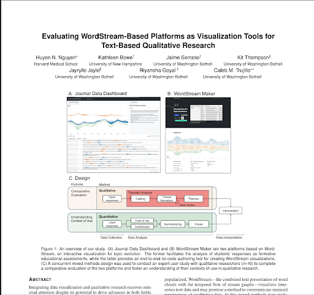

User Research Study
Evaluating Wordstream-Based Visualization Tools for Text-Based Qualitative Research
Overview
This project was a user research study I contributed to, focused on evaluating wordstream-based visualizations as tools for text-based qualitative research. The work examines how these visualization techniques can support researchers in understanding and analyzing large bodies of qualitative text data.
Rather than a design case study, this page serves as an overview of the research—its context, approach, and outputs—from my role as a team member on the study.
Research & method
The study assessed wordstream-based visualization tools in the context of qualitative research workflows. We considered how researchers interpret and use these visualizations when working with text data, and what strengths or limitations they encounter. The methodology combined structured evaluation with qualitative feedback from participants working with the tools.
Outputs
The work resulted in a research poster and a full paper, which are shown below. These documents summarize the study design, findings, and implications for using wordstream-based visualizations in text-based qualitative research.
Research paper — Evaluating Wordstream-Based Visualization Tools for Text-Based Qualitative Research.